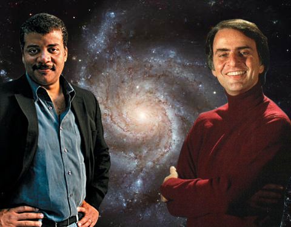
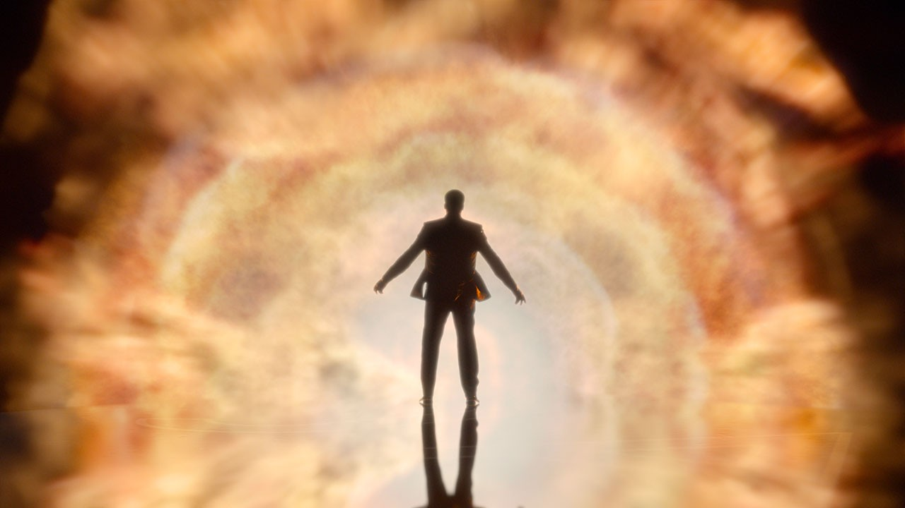

Dr. Neil Degrasse Tyson is the director of the Hayden Planetarium in New York City. He was born on October 5th 1958 and is considered one of the chief communicators of scientific discovery and thought in the United States, and indeed the world.
Tyson is one of the most notable students of the famed astrophysicist, Carl Sagan, who is also famous for his role as a communicator of scientific thought to the public.
Like his mentor before him, Tyson hosted a series of documentary pieces titled “Cosmos” in order to spread scientific awareness to the public.

In addition to his frequent public appearances on late night talk shows and public television, Tyson also runs his own podcast, Startalk, where he engages in in depth conversation with regular guests from the scientific community and pop culture.
One of Dr. Tyson’s favorite past times, is to poke holes in science fiction movies by pointing out their scientific errors using many mediums including his own twitter account.